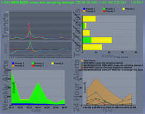
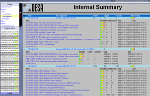
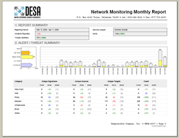
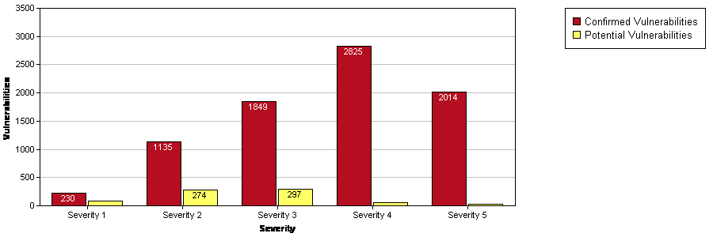

Digital Enterprise Security Associates (DESA) was founded in 2004 to support the increasing demand and opportunities in information assurance consulting services, research, and development. DESA understands that network and data protection requires continuous improvements in response to changing technologies and threats.
Understanding the nature and severity of threats is critical for effective prevention and response. DESA provides network administrators and security professionals with tools to measure risk and devise remediation plans. DESA’s expert digital security team can assist you in determining what your individual company needs are to help you make an informed decision.
Digital Enterprise Security Associates (DESA, Inc.) is an innovative leader in information assurance, consulting and product development. Headquartered in Tulsa, Oklahoma, DESA delivers industry leading processes, practices, and expertise to a variety of private and public organizations both locally and nationally. DESA is continuously improving and responding to evolving technology and is a leader in cutting-edge research. DESA employs highly trained security professionals with expertise in research, development and implementation to offer our clients superior products and services.
Dr. Dawkins is the Founder and CEO of DESA. Dr. Dawkins has published over twenty publications in information assurance and has provided security briefings to both private and governmental organizations. He brings an extensive background in security research and development and in the execution of top-level projects and programs in major companies and organizations. During his tenure at the University of Tulsa, Dr. Dawkins led the Enterprise Security Research (ESG) team and laboratory while receiving his M.S. and Ph.D. in Computer Science. His research, funded by the National Security Agency, focused on multi-stage attack analysis (next generation penetration testing techniques) and an advanced quantitative assessment methodology that he now brings to the private sector.
Mr. Schulte is a Senior Security Analyst at DESA. He has lead major regulatory audits, vulnerability scans and penetration tests. He has worked with the National Security Agency (NSA) as a Global Network Exploitation and Vulnerability Analyst in the National Security Incident and Response Center (NSIRC). Mr. Schulte has also served as a team member in the Network Intrusion Analysis Division (NIAD) of the NSIRC. Mr. Schulte holds a B.S. and M.S. in Computer Science from the University of Tulsa.
Mr. Edgar serves as a Senior Security Analyst at DESA. He has extensive experience and training in computer and network forensics and information assurance. Mr. Edgar has worked with the National Security Agency as a Global Network Exploitation and Vulnerability Analyst. He has also served with the Federal Bureau of Investigation preparing background information on Firewalls and Intrusion Detection System. He researched and revised classified project planning proposals and has performed numerous digital vulnerability assessments. Mr. Edgar holds a B.S. from the University of Tulsa in Computer Science and several certificates from the SANS Institute.
Mrs. Serrata is the Director of Marketing Public Relations for DESA. She establishes the overall marketing strategy and implementation, client communications, marketing communications, and public relations. Amy holds a B.A.A.S in Public Relations and Public Administration from the University of North Texas. Her training includes a prestigious internship with the Public Relations Department at Southwest Airlines. Additionally, Mrs. Serrata has lead community and regional marketing and public relations projects with the American Red Cross, March of Dimes and the Lazy E Arena. She is also a co-founder of Heartland Lab Rescue, Inc., an all volunteer, non-profit organization that rescues and rehabilitates Labrador retrievers that have been abandoned, abused or are just unwanted.
Mrs. Schulte serves as a Security Analyst at DESA. Her wide range of experience includes security testing, training, risk assessments as well as work involving policy and procedure analysis. She has worked with the National Security Agency as an Information Systems Security Engineer. Mrs. Schulte holds a B.S. from the University of Tulsa in Computer Science.
Mr. Oglesby serves as a Software Security Scientist at DESA. He has extensive experience designing and implementing security software and protocols. Mr. Oglesby has worked with Pacific Northwest National Laboratory in developing new secure SCADA protocols for the nation’s power grid and cutting edge information visualization software. He has studied hacker techniques and has competed in top ranked security competitions. Mr. Oglesby holds a B.S. from Oral Roberts University and an M.S. from the University of Tulsa in Computer Science.
While Intrusion Detection Systems (IDSs) are imperative for today’s high-tech businesses, they prove to be a challenge for IT personnel. Not only are these devices time consuming to monitor, but they require a great deal of skill and aptitude to configure, analyze, and respond to intrusive behavior.
DESA’s Incident Monitoring Solution will provide complete protection against your web services. Eliminating false-positives and correlating intrusive behaviors, DESA’s security analysts will:
DESA provides full timeframe-based packet captures for comprehensive coverage and post incident analysis. In addition, our proprietary Network Packet Processor technology provides packet and session based analysis to each alert, giving analysts the information they need to make well-informed decisions.

Real-time Alerts
Incident Analysis
Sample Monthly ReportActive Response complements Security Monitoring by allowing DESA to provide quick, effective changes on an enterprise’s security perimeter, while allowing organizations to retain control of their core IT security.

DESA conducts external network assessment and penetration tests using the best practice methodology and industry standard tools. These tests are conducted by highly experienced staff members who have earned a variety of federally and industry recognized security certifications.
DESA will precisely identify and enumerate points of vulnerability from the viewpoint of an internal trusted user, the associated security risks, and information on corrective actions. On designated systems, DESA can test for operating system-level vulnerabilities, access control, password strength and more. DESA employs and utilizes multiple tools for server and workstation testing.
From information gathered and correlated from interviews as well as manual and automated processes, computational network models will be formulated that describe the organization’s network. This quantitative technique accurately assesses the impact of vulnerabilities on a given system given its unique business function. This information allows ranking by severity not only for vulnerabilities but logical systems based on their relative importance to the organization and the potential for compromise.
DESA has qualified personnel with experience performing IT audits using numerous standards, including ISO 17799, COBIT, OCTAVE, and PCI. DESA can apply these standards to accurately determine regulatory compliance with various laws and industry regulations including HIPPA, SOX, GLBA, and NERC.
DESA strives to maintain the confidentiality and integrity of our customer’s sensitive data throughout the assessment process. In addition, each report is digitally signed after it is created to ensure integrity throughout its lifespan. Customers are provided secure access to the report via encrypted email or a password-protected, SSL-enabled Project Portal.
Minimizing Customer Impact: DESA enforces strict controls on the scanning application to ensure minimal bandwidth utilization. Specifically, DESA limits the number of hosts that can be scanned in parallel and the total number of processes that can be active. Additionally, packet (burst) delay is enforced.
Reporting and Presentations: DESA delivers executive level and engineering reports and presentations that provide compressive and detailed guidance for remediation and security program improvement. Vulnerabilities are identified, prioritized and justified based on risk management plans, best practices and regulatory requirements.
Project Portal: DESA commits to engaging the customer for the duration of the project activities. To support this, DESA deploys a Project Portal that provides secure Internet access to project members. The Project Portal, combined with face-to-face collaboration with the customer, provides a highly effective skills and knowledge transfer mechanism. This Project Portal is a key tool for managing the project and ensuring that the customer is fully informed on project progress and has ready access to project deliverables. It provides a centralized repository for contact names, key project milestones, questions and answers, as well as serving highly secure access to raw data and reports.
To find out how DESA can specialize a security solution for you, please contact us at info@desasecurity.com or call us at 866.430.2595.
DESA, Inc. is a PCI approved vendor that offers a comprehensive and easy to use service to help you achieve compliance with the Payment Card Industry (PCI) Data Security Standard. Compliance under the PCI standard may include some or all of the following: onsite reviews, security self-assessments, and security scans.
DESA will help you identify the hosts that are required to be scanned and work with you in setting a scanning schedule up to four scans in advance to minimize your burden throughout the process. Once the initial scanning process is complete, DESA will analyze the results, formulate the report, and send you a preliminary for review. This preliminary report is intended to notify you of any issues prior to final report generation. We pledge to work closely with you throughout the resolution and remediation process. Once the required fixes are in place, we will schedule another scan to verify their success and issue the final report validating your compliance under the scanning requirements of the PCI Data Security Standard.
For more information about how DESA can help your business grow while maintaining compliance with PCI standards, please contact the DESA office at 866.430.2595 or e-mail us at pci@desasecurity.com.
For more information about the PCI requirements please visit www.mastercardsecurity.com or www.visa.com/business.
PCI self-assessment quiz (PDF not available in archive)
Digital and technical security threats emerge exponentially as do digital myths and misinformation. DESA can provide your organization with the tools to help keep your employees informed and up to date on technology security issues. Dr. Jerald Dawkins, President and CEO of DESA, has developed the curriculum. Dr. Dawkins has published over twenty publications in information assurance and has provided security briefings to both private and governmental organizations. While studying for his M.S. and Ph.D. in computer science, Dr. Dawkins also co-instructed the Enterprise Security Management at the University of Tulsa. He has an extensive background in security research and continues to be on the cutting edge of theory and experience. His expertise has provided a very unique and engaging training program that provides easy to follow practices and instruction.
The class materials can either be provided to you to enable your trainers to lead a session or you can opt to have the class presented by one of DESA’s highly skilled security team members. Additionally, a subscription is available providing you with an annual update to the security training materials. With the subscription you will also receive a quarterly newsletter addressing new topics to be aware of and giving you reminders and tips to provide to your employees.
Providing the training to your employees will help eliminate many questions regarding password security, what files to open or delete — ultimately saving your IT team time and your company money. Classes are typically one and a half hours and can be tailored to address specific company policies or concerns. Including many other topics, the class addresses these frequent security issues:
Contact DESA to begin implementing a security training program to keep your organization up to date and in business.
First Quarterly Meeting
Thursday, March 1st
Perimeter Technology Center — 322 E. Archer, Tulsa, OK
The meeting will begin at 4:00 p.m. with the Tech-Night-Out reception to follow from 5:15 - 7:00 p.m.
Speakers will include Dr. Jerald Dawkins, President and CEO of DESA, Inc.
For more information please contact the State Chamber.
Today, companies of all sizes depend on information technology (IT) to conduct business. These companies, while enjoying the benefits of modern technology, undoubtedly face some degree of turmoil in dealing with the complexity and involvedness of the technology.
Read moreOutside my door, in the basement of an older office building, there is a room full of empty abandoned file cabinets. These cabinets, once the predominant means of storing a company’s critical information, have been left behind and replaced by PCs and file servers. Once full of paper, now collecting dust, the file cabinet graveyard portrays the fundamental shift in the way companies are doing business.
Today, companies of all sizes depend on information technology (IT) to conduct business. These companies, while enjoying the benefits of modern technology, undoubtedly face some degree of turmoil in dealing with the complexity and involvedness of the technology. When it comes to securing their IT infrastructure, companies must tackle several challenges:
Patch Management
As new vulnerabilities are released daily, exploit developer’s (e.g. hackers, crackers, and spam and worm authors) arsenals are continually reloaded. Effective patching of vulnerabilities is a key component to securing networks, yet difficult due to the growing number of vulnerabilities released; the Computer Emergency Response Team/Coordination Center (CERT/CC) reported 2874 vulnerabilities in the first half of 2005, an average of 15 per day. A single unpatched system can render an entire network susceptible to exploitation, leaving network administrators frustrated and helpless. Moreover, patch management isn’t preemptive security so its value is limited; taking defensive measures to protect networks far exceeds fixing problems as they arise.
Popular Applications
Use of popular applications such as instant messaging and peer-to-peer networking technologies has increased in recent years. These seemingly harmless applications, AOL Instant Messenger, MSN Messenger, KaZaA, and Napster to name a few, can actually put networks at increased risk. Most transmit unencrypted messages and files, offer no controls for prevention of the transfer of copyrighted files (to include software, MP3s and photos), are susceptible to well-known buffer overflow attacks, and are targeted by viruses and worms.
Users
Every employee, and the information stored on his or her computer, is a potential target for any number of attacks. Spyware, viruses, and worms can be unintentionally downloaded, causing productivity and ultimately monetary loss. Deliberate attacks from both expert hackers as well as insiders seeking revenge or personal gain pose a real and unique threat that is difficult to mitigate.
Compliance
Entire industries are finding themselves federally mandated to make information security a top priority, e.g. HIPAA, Sarbanes Oxley, FISMA, and more. Intended to improve the security and accountability of companies, these provisions are often extensive, requiring substantial interpretation and often major modifications to business practices.
Evolving Market
New vulnerabilities, new hacker tools, new security products, and new software releases make IT an ever evolving market, one where it’s nearly impossible to stay on the cutting edge. Experts with the knowledge and skill set required to undertake the challenges of security are desperately needed, but difficult to find and costly to hire and retain in today’s job market. Finding security professionals with adequate training and breadth and depth of experience is essential. To a true security expert, analysis and resolution of network attacks should be an everyday occurrence.
Constantly faced with these challenges and others, network administrators struggle to keep pace. The risks are eminent and disaster unavoidable unless defense is properly implemented. Execution of this defense is a business necessity.
The good news is that help is on the way. The federal government has taken enormous strides in educating the general public about the concerns of IT security. Why does the government have such an interest in IT? Department of Homeland Security statistics reveal 85% of America’s critical infrastructure is owned and controlled by private enterprise. In addition, the Department of Defense and the National Science Foundation have initiated grant programs for Universities, such as the University of Tulsa, to provide scholarships to students majoring in IT-related fields of study. The students learn skills such as vulnerability scanning, security monitoring, enterprise security risk assessment, network and host hardening, penetration testing, and forensics analysis. To supplement this knowledge, students are given unique employment opportunities with federal government agencies to apply their skill sets in protecting America’s cyberspace. Security experts like these bring the knowledge and expertise required to undertake the most demanding security challenges in today’s private industry.
When exploring security services for your company’s IT infrastructure, remember that just as each company is different, its security needs are also unique, and must be treated as such. There is “no one size fits all” solution when it comes to network security. The need for security functions varies depending on company function, size, and budget. Customized, scalable solutions are crucial in appropriately protecting your IT infrastructure.
{kind=link}
{kind=link}